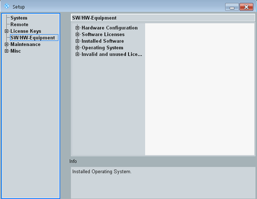

SW/HW Equipment
The "SW/HW Equipment" section of the "Setup" dialog shows the installed software and hardware and lists the available options.
The option R&S CMW-B620A is not listed, even if it is installed. If the option is installed, a DVI connector is present on the rear panel. |

SW/HW-Equipment section
Most contents of the "SW/HW Equipment" section can also be queried via remote commands.
Remote command: